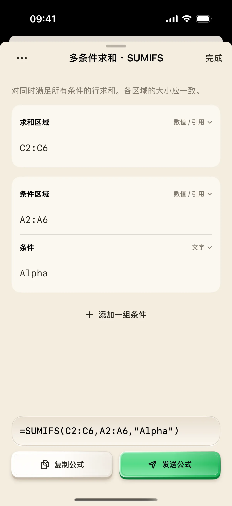
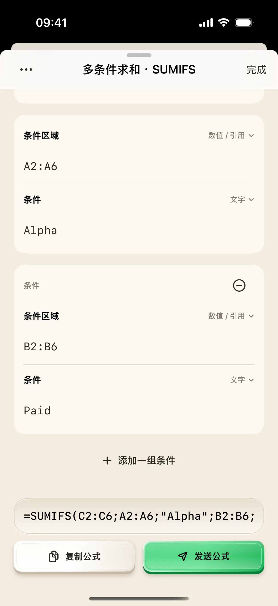

表格里同时有不同项目和付款状态，只想统计 Alpha 项目已经付款的金额，逐行相加很容易漏。本文使用五行自制练习数据，先按项目筛一次，再加入 Paid 条件，最终应得到 155。重点是看懂每个区域和条件放在哪里。
开始前准备
- 使用奶猫妙控 1.2.0，并在 Mac Excel 中准备一个空白工作表。
- 下载下面的 CSV，确认表头在 A1:C1，五行记录在第 2 至第 6 行。
- 生成与复制公式可以在手机本地完成；要使用“发送公式”，需要连接 Mac 并先聚焦目标单元格。
1. 导入练习数据，确认列与行号
下载练习 CSV，在 Excel 中打开，或把内容导入空白工作表的 A1。A 列是 Project，B 列是 Status，C 列是 Amount。
五条记录依次为 Alpha／Paid／120、Alpha／Pending／80、Beta／Paid／200、Alpha／Paid／35、Beta／Pending／50。先人工核对：Alpha 总额为 235，其中 Paid 两笔是 120 和 35，合计 155。后续用这两个数检查筛选是否正确。
下载：项目支出练习数据（CSV）。
2. 打开“统计汇总”，长按 SUMIFS
在手机点“布局”，搜索“统计汇总”，打开财务布局对应桌面。找到 SUMIFS，长按打开参数编辑页。
点按公式按钮与长按含义不同：点按用于输入函数起始内容，长按才会出现逐项填写的编辑器。本文需要生成完整公式，所以使用长按。
3. 先填第一个条件：项目等于 Alpha
按下面三项填写，并保持区域是“数值／引用”、Alpha 是“文字”。文字类型会自动补上双引号，不用自己在输入框里再包一层引号。
收起键盘，预览应为 =SUMIFS(C2:C6,A2:A6,"Alpha")。这里先只筛项目，所以在 Excel 执行时的预期结果是 235。范围都从第 2 行到第 6 行，避开表头。
- 求和区域：C2:C6。
- 条件区域：A2:A6。
- 条件：Alpha，类型保留“文字”。

4. 添加第二组条件：状态等于 Paid
点“添加一组条件”，在新的一组中将条件区域填为 B2:B6，条件填为 Paid，类型保留“文字”。新增条件尚未填完时，复制按钮暂时不能使用；两项补齐后再检查预览。
最终公式应为 =SUMIFS(C2:C6,A2:A6,"Alpha",B2:B6,"Paid")。SUMIFS 会同时应用这些条件，本例只有 Alpha 且 Paid 的两行被计入。不要把 Paid 填进求和区域，也不要让第二组范围比其他范围少一行。 预览较长时，可以横向滑动底部公式查看末尾参数。

5. 复制公式，在空白单元格验证 155
点“复制公式”，看到“已复制”提示后，公式在 iPhone 剪贴板中。把它传到 Mac 后，在练习表的 E2 粘贴并确认；若设备没有共享剪贴板，可以在 Mac 手动输入上面的完整公式。
已连接时也可以先选中 Mac 的空白 E2，再点“发送公式”，随后在 Excel 中确认输入。无论用哪种方式，都应在表格里看到 155。奶猫妙控的公式预览展示公式文本，不能代替这一步结果核对。
6. 需要分号时切换分隔符，再做一次检查
如果你的 Excel 环境使用分号作为参数分隔符，点参数页左上角“参数分隔符”，选择“分号 ;”。预览会变成 =SUMIFS(C2:C6;A2:A6;"Alpha";B2:B6;"Paid")。
重新复制修改后的公式再测试。分隔符变化不应该改变求和逻辑；结果不对时，回到原表检查 C 列是否是数值、条件是否多了空格，以及所有区域是否覆盖相同的五行。

操作不符合预期时
为什么公式结果是 235？
235 是本例只按 Alpha 项目汇总的结果。检查是否漏了 B2:B6 和 Paid 这一组条件，或是否粘贴了添加第二组条件之前的旧公式。
条件要引用 E1，为什么预览把 E1 加上了引号？
该参数仍处于“文字”类型。打开参数旁的内容类型，改为“数值、引用或公式”，再输入 E1。引用和字面文字含义不同，修改后检查预览。
为什么找不到参数编辑页？
要长按 SUMIFS；普通点按不会打开逐项参数编辑器。
新增一组条件后复制按钮变灰，是故障吗？
先检查新组是否只填写了一半。区域与条件需要成对补齐；不再需要的新组可用“删除这组条件”移除。
本文按奶猫妙控 1.2.0 的界面与操作编写，更新于 2026 年 9 月 10 日。查看更新日志 · 连接与权限帮助。